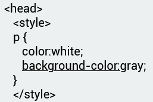
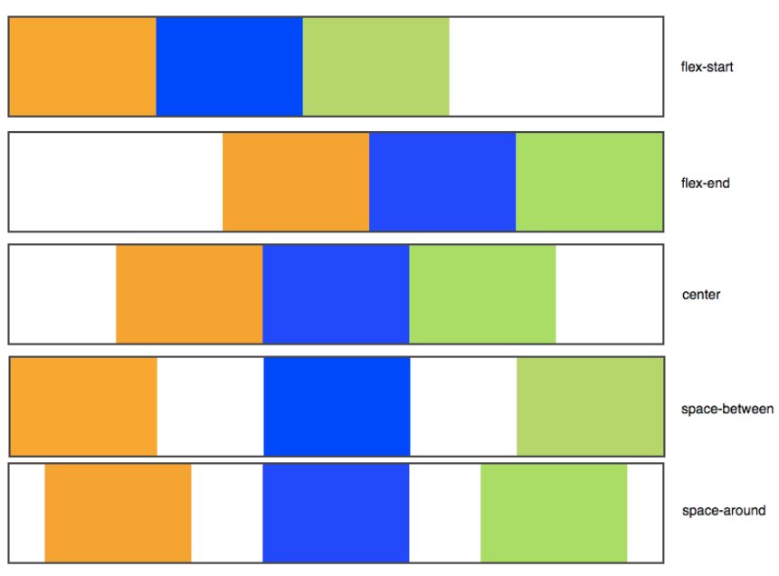
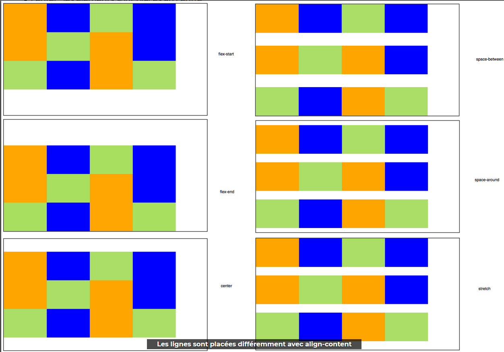
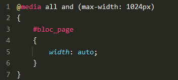
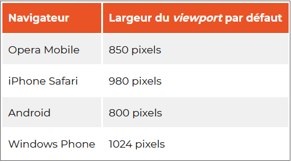
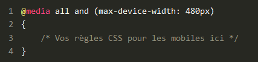

Structure CSS
External CSS
- Chaque ensemble de régles, à l'exception du sélecteur,doit être entre accolade
- Pour chaque déclaration, il faut utiliser deux points pour séparer la propriété de ses valeurs.
- pour chaque ensemble de règles, il faut utiliser un point-virgule pour séparer les déclarations entre elles.

Sélecteur
C'est le nom de l'élément HTML situé au début de l'ensemble de règles. Il permet de sélectionner les éléments sur lesquels appliquer le style souhaité (en l'occurence, les éléments p). Pour mettre en forme un élément différent, il suffit de changer le sélecteur.
Déclaration
C'est une règle simple qui détermine les propriétés de l'élément que l'on veut mettre en forme.
Propriété
Les différentes façons dont on peut mettre en forme un élément HTML (dans ce cas, color est une propriété des éléments p). En CSS, vous choisissez les différentes propriétés que vous voulez utiliser dans une règle CSS.
Valeur de la propriété
À droite de la propriété, après les deux points, on a la valeur de la propriété. Celle-ci permet de choisir une mise en forme parmi d'autres pour une propriété donnée (par exemple, il y a d'autres couleurs que red pour la propriété color).
A savoir que
Inline CSS
<p style = ....> Texte </p> = Mise en place d'un attribut de style sur un paragraphe
internal CSS
-

Différent types de selecteurs
| Sélecteur | Element sélectionné | Exemple |
| Sélecteur d'élément | Tous les éléments HTML d'un type donné | p <p> |
| Sélecteur de plusieurs éléments | Tout les éléments présents dans la sélection | p,h1,h2 <p> <h1> <h2> |
| Sélecteur d'ID | L'élément d'une page qui possède l' ID fourni (un seul élément par ID donné) | #my-id <p id="my-id"> |
| Sélecteur de classe | Les éléments d'une page qui sont de la classe donnée (plusieurs éléments peuvent avoir la même classe) | .my-class <. class= "my-class"> p.my-class <p class="my-class"> |
| Sélecteur d'attribut | Les élements de la page qui possèdent l'attribut donné | img[src] <img src= "mon-image.png"> p[color=red] sélectionne toutes les balises <p> ayant comme attribut [color=red] |
| Sélecteur de pseudo-classe | Les éléments donnés mais uniquement dans un certain état (ex: quand t-on passe la souris dessus ) | a: hover sélectionne <a> mais uniquement quand le pointeur de la souris est au dessus du lien. |
| sélection globale | tous élément de la page | * sélectionne toutes les balises |
| Sélection précise | 1 :une balise <p> qui suis une balise <h1> 2 :toutes les balises <em> des balises <p> |
1 :h1+p 2 :p em |
Pour en savoir plus W3C
Notions de vocabulaire
- /*....*/ = commentaire
- font-family : police01, police02, ...ect, sans-serif (police par défaut);
- font-style :....; = style de la police
- front-variant: normal/small-caps; = normal/petites capitales
- font-weight :...; = épaisseur de la police
- list-style:....; = modif apparence liste à puces
- list-style-image: url(chemin de l'image); = Remplacement des puces par une image
- text-decoration:...; = décoration texte(surlignage ....ect)
- text align: justify; = alignement du text sur toute la largeur
- text-transform:...; = transfo text (min/maj...ect)
- float:...; = englobage du texte sur l'image
- clear:...; = annule flotting sur texte
- background-color: = couleur AP
- backround-image: url= ("chemin du dossier"); = image en AP
- backround-size: cover; = Reglage taille sur toute la largeur de l'image en AP
- backround-attachment: fixed; = le fond restera fixe
- background-repeat: no-repeat; = le fond ne se répètera pas
- background-position: top right; = image de fond placée en haut à droite
- background: url("chemin de l'image01") fixed no-repat top right, url("chemin de l'image02") fixed; = combinaison de deux images séparées par (,)
- opacity: ...; = réglage opacité (entre 0 et 1)
- p{text-align: center;} = alignement du texte au centre
- border-radius: ..px; = crétion de bordures arrondies
- box-shadow: .px .px .px (couleur) inset (pour une ombre vers l'intérieur du bloc) ); = ajout d'une ombre à la bordure
- text-shadow: .px .px .px (couleur); = ajout d'une ombre a un texte
- text-decoration: (underline/none);
- ul {list-style: none;} = sppression puce sur liste à puces.
- table {border-collapse:collapse;} = fusion des bordures d'un tableau
- caption-side: top/bottom; = placement du titre
Les polices (fontes) et le texte
A savoir
Il existe 2 unitées de mesure :
- px(taille précise)
- em(taille standardisé/plus adaptable = 1.5 ou plus)
Principales polices connues des navigateurs :
- Arial
- Arial Black
- Comic Sans MS
- Courier New
- Georgia
- Impact
- Times New Roman
- Trebuchet MS
- Verdana
Procédure
- Récupération sur Google Fonts
- J'ajoute la balise <link...> au sein de la balise <head> dans fichier ".HTML"
<link href="https://fonts.googleapis.com/css?family=Bellota =swap" rel="stylesheet"> - Je copie/colle la partie font-family dans le fichier ".CSS"
Les bordures
Pour border on peut utiliser jusqu'à trois valeurs pour modifier l'apparence de la bordure.
- La largeur : ..px
- La couleur de trois façons différentes ( HTML Colors Code):
- Le nom de la couleur (black,red...)
- Sa valeur hexadécimale (#FFOOOO)
- Sa valeur ( RGB (198,152,152) )
- Le type de bordure:
- border: none; = pas de bordure (par défaut)
- border: solid; = un trait simple
- border: dotted; = pointillés
- border: dashed; = tirets
- border: groove; = en relief
- border: ridge; = autre effet relief
- border: inset = effet 3D global efoncé
- border: outset = effet 3D global surélevé
-On peut selectionner une bordure et sa propriétée à modifier : border-(top/bottom/left/right)-(width/color/...ect);
Les ombres
La propriété box-shadow prend quatres valeur cans l'ordre suivant:
- Décalage horizontal de l'ombre
- Décalage vertical de l'ombre
- L'adoucissement du dégradé
- La couleur de l'ombre
Apparences dynamiques
- Au survol :
a: hover{....;} = interaction lors du passage de la souris - Au clic ou lors de la sélection :
a: active {background-color:....;} = changement de couleur de fond après un cilc - Lorsqu'un lien a déjà été consulté :
a: focus{color:...;} = une fois visité il change de couleur
Modèle de boîte
Les bases
- Positionner un bloc
- Quadrillage en HTML :
- définir les colonnes (et leur dimensions):
#col{display: inline-bloc;}
- définir les colonnes (et leur dimensions):
- Jouer sur le positionnement via un conteneur:
- Mettre le conteneur en relatif :
position:relative; - Mettre le bloc en absolue :
position:absolute - Déplacer le boc:
top/bottom/right/left:...;
- Mettre le conteneur en relatif :
- Quadrillage en HTML :
- Text du bloc
- overflow :
- scoll; = texte coupé mais avec bare de défilement
- auto; = mise en page auto
word-wrap: break-word; = ajustement en cas de longt texte sans esapces (adresse http ...ect)
- overflow :
Flexbox
-
Placement des blocs côte à côte dans le conteneur :
#conteneur{display: flex;} -
Placement des éléments :
flex-direction:...;- : row; = organisé en ligne (par défaut)
- : column; = orgaisé en colonne
-
Retour à la ligne si ils manquent de place :
flex-wrap: wrap; -
Alignement des éléments :
-
Axe principale :
justify-content:...;

- Axe secondaire :
align-items: ...;- stretch; = les éléments sont étirés sur tout l'axe (valeur par défaut)
- flex-start = aligné au début
- flex-end = aligné à la fin
- center = aligné au centre =
- baseline = aligné sur la ligne de base (comme flex-start)
-
-
Déplacer un élément isoler sur l'axe secondaire :
- Etablir la valeur :
#conteneur{display: flex;} - Définir l'axe principale :
flelx-direction:...; - Alignement sur axe principale :
justify-content:...; - Alignement axe secondaire :
align-items:...; - Isoler et aligner un élément :
.element:nth-child(numéro de l'élément à isoler) {align-self:...;}
- Etablir la valeur :
Mise à la ligne auto d'un élément :
flex-wrap: wrap;-
Repartition quand il y a plusieurs blocs !
align-content:...;

-
Ordonner ses éléments :
.element;nth-child(numéro de l'élément) {order:...;}Leur donner une épaisseur :
.element:nth-child(.) {flex: (.);}
-
Pour plus d'infos : Web docs
Media Queries
Mise en place
- Feuille de style différente :
- <link rel="stylesheet" media="screen and (max-width: 1250px)" href="petite_resolution.css" />
- media="" = Règle qui doit s'appliquer pour que le fichier soit chargé (Média Queries
- <link rel="stylesheet" media="screen and (max-width: 1250px)" href="petite_resolution.css" />
- Feuille de style éxistante :
- @media screen and(max-width: 1280px)
{........}
- @media screen and(max-width: 1280px)
Règles disponibles
- color : = Gestion de la couleur
- height : = Hauteur zone d'affichage (fenêtre)
- width : = Largeur de la zone d'affichage (fenêtre)
- device-height : = Hauteur du périphérique
- device-width : = largeur du périphérique
- orientation : = orientation du périphérique
-
media :
= type d'écran de sortie
- screen = Ecran (calssique)
- handheld = Périphérique mobile
- print = Impression
- tv = Télévision
- projection = Projecteur
- all = Tous les types d'écran
- only = Uniquement
- and = Et
- not = Non
- @media and (max-width :1280px) = Sur les écrans, quand la largeur de la fenêtre fait au max 1280px
- @media all and (min-width :1024px) and (max-width :180px) = Sur tous types d'écran, quand la largeur de la fenêtre est comprise entre 1024px et 1280p
- @media all and (orientation: portrait) = Sur tous types d'écrans orientés verticalement
On peut rajouter le préfixe min ou max devant la plupart de ces règles.
Les règles peuvent être combinées avec :
Notion de vocabulaire
Mise en pratique
- Centrer la page 
- Adapter la mise en page
- flex-direction : column
- Adapter la taille de police en "em"
- font-size :...em
- Masquer des élements
- display :none
Media queries et navigateurs moblies
- Defintion :
Pour s'adapter, les navigateurs mobiles affichent le site en « dézoomant », ce qui permet d'avoir un aperçu de l'ensemble de la page. La zone d'affichage simulée est appelée le "viewport", c'est la largeur de la fenêtre du navigateur sur le mobile. - Largeur : 
- Compatibilitée : 